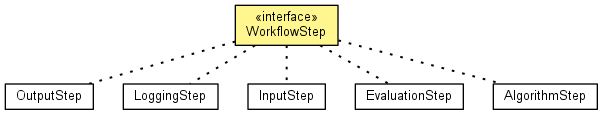

JavaScript is disabled on your browser.
Overview
Package
Class
Use
Tree
Deprecated
Index
Help
Prev Class
Next Class
Frames
No Frames
All Classes
Summary:
Nested |
Field |
Constr |
Method
Detail:
Field |
Constr |
Method
de.lmu.ifi.dbs.elki.workflow
Interface WorkflowStep

All Superinterfaces:
InspectionUtilFrequentlyScanned
,
Parameterizable
All Known Implementing Classes:
AlgorithmStep
,
EvaluationStep
,
InputStep
,
LoggingStep
,
OutputStep
public interface
WorkflowStep
extends
Parameterizable
Trivial interface for workflow steps. A logical grouping of classes with no real functionality.
Overview
Package
Class
Use
Tree
Deprecated
Index
Help
Release 0.5.5 (2012-12-10_1245)
Prev Class
Next Class
Frames
No Frames
All Classes
Summary:
Nested |
Field |
Constr |
Method
Detail:
Field |
Constr |
Method